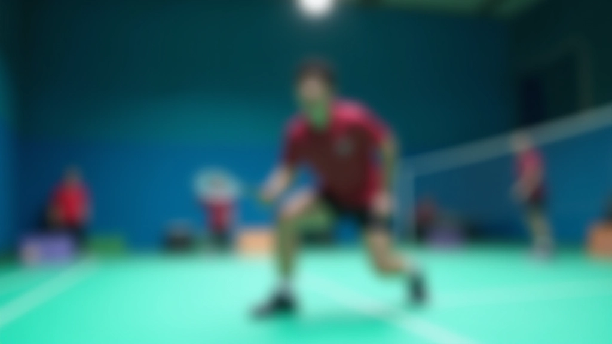
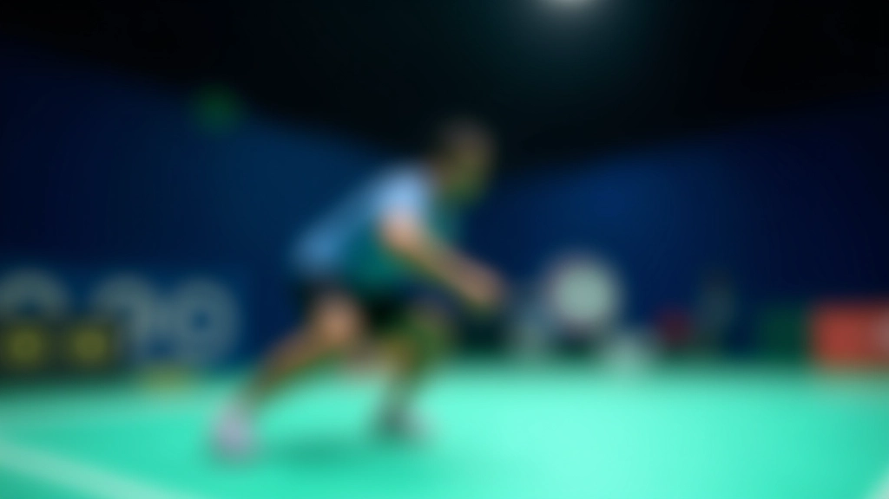
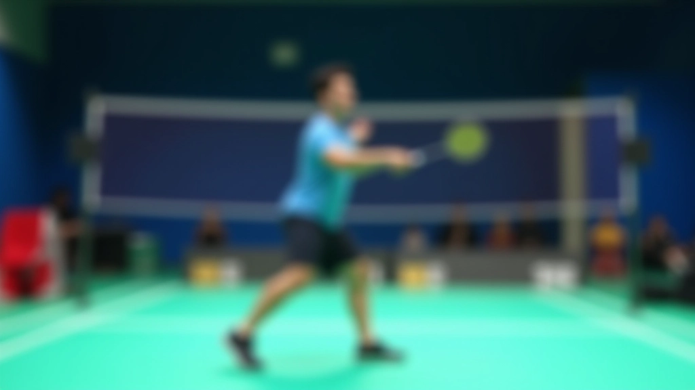
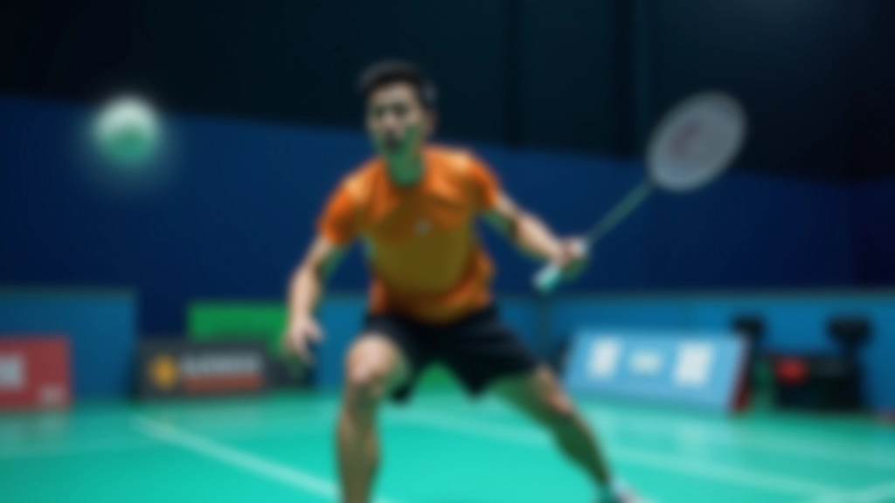
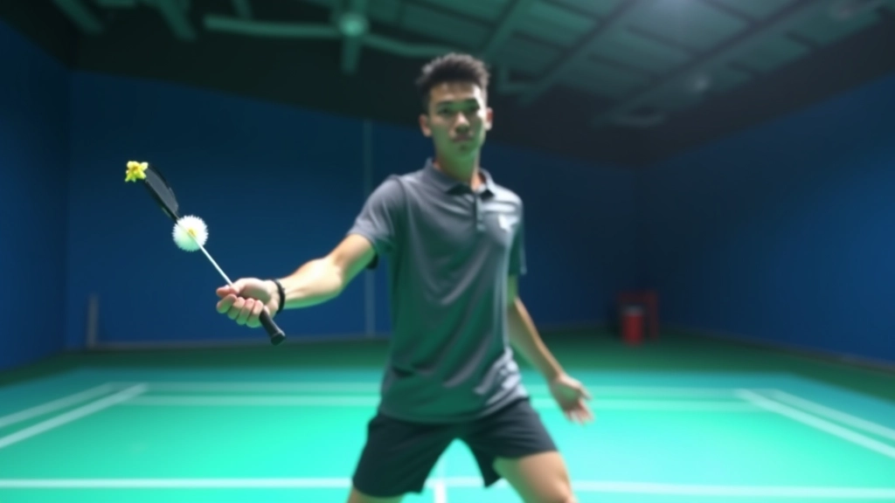

لماذا الحركة السريعة أساسية؟
في الريشة الطائرة الفردية، الوقت ثمين. ما يفصل بين نقطة مكتسبة ونقطة مفقودة غالباً هو جزء من الثانية. لاعبك لا يحتاج فقط إلى أن يصل إلى الكرة — يجب أن يصل إليها وهو في وضع متوازن وجاهز للرد.
الحركة السريعة ليست مجرد السرعة الخام. إنها عن الكفاءة. عندما تتحرك من خط الدفاع نحو الشبكة، أنت تغطي مسافة كبيرة. إذا لم تكن حركتك منظمة وسلسة، ستجد نفسك متعثراً أو خارج الموضع عندما تصل إلى الكرة.

المفتاح: الحركة السريعة لا تعني الركض السريع. إنها تعني الخطوات الصغيرة والمتكررة التي تبقيك جاهزاً للتحرك في أي اتجاه دون تأخير.

المراحل الثلاث للحركة الفعالة
الحركة من الخطوط الخلفية إلى الشبكة تتكون من ثلاث مراحل متميزة، وكل واحدة لها دورها الخاص. أولاً: مرحلة الاستعداد حيث تبقى في موضع جاهز مع خطوات صغيرة. ثانياً: مرحلة الدفع السريع حيث تدفع نفسك نحو الأمام. ثالثاً: مرحلة الاقتراب من الشبكة حيث تبطئ قليلاً وتحافظ على التوازن.
معظم اللاعبين يفقدون النقاط في المرحلة الثالثة. يركضون بسرعة كبيرة نحو الشبكة، ثم يحاولون إيقاف أنفسهم فجأة. هذا يجعلهم عرضة للأخطاء. بدلاً من ذلك، ابدأ بتقليل السرعة في الخطوات الأخيرة. حافظ على التوازن. كن جاهزاً.
ملاحظة تحريرية
هذا الدليل يقدم معلومات تعليمية عن تكتيكات تغطية الملعب. النتائج الفردية تختلف حسب مستوى اللاعب والممارسة المنتظمة والتغذية الراجعة من المدربين. الممارسة المستمرة والتدريب المنتظم هما المفتاح لتحسين الأداء.
تمارين عملية لتحسين الحركة
لا تحتاج إلى أي معدات خاصة لتحسين حركتك. ابدأ ببساطة مع تمرين الخطوات الصغيرة. قف في منتصف الملعب وقم بخطوات صغيرة بسرعة، محاولاً البقاء متوازناً. هذا يقوي عضلات قدميك ويحسن تناسقك.
تمرين الخطوات السريعة: ٣ مجموعات من ٣٠ ثانية. ابقَ في مكانك وقم بخطوات سريعة دون التحرك للأمام.
حركة الانتقال: اركض من خط الدفاع إلى الشبكة ٥ مرات متتالية، مع التركيز على الخطوات المتحكم بها في النهاية.
تمرين التوازن: بعد الوصول إلى الشبكة، ابقَ ثابتاً على قدم واحدة لمدة ٣ ثوان قبل العودة.


الخطوات الصغيرة — السر الحقيقي
كثير من اللاعبين يركزون على أخذ خطوات كبيرة سريعة. لكن هذا خطأ. الخطوات الصغيرة والمتكررة هي ما تجعلك مستجيباً وسريعاً. عندما تأخذ خطوات صغيرة، أنت دائماً في موضع يسمح لك بالتحرك بسرعة في أي اتجاه.
تخيل لاعباً يأخذ خطوتين كبيرتين نحو الشبكة مقابل لاعب يأخذ ست خطوات صغيرة. اللاعب الأول قد يكون أسرع للوهلة الأولى، لكن اللاعب الثاني يمكنه تغيير اتجاهه بسهولة أكبر. في الريشة الطائرة، المرونة مهمة مثل السرعة.
تجنب الأخطاء الشائعة
هناك عدد من الأخطاء التي يرتكبها اللاعبون المبتدئون والمتوسطون عند محاولة تحسين حركتهم الدفاعية.
- الركض بخطوات كبيرة جداً: يقلل من المرونة والتحكم. الخطوات الصغيرة أفضل.
- الإيقاف المفاجئ عند الشبكة: يسبب فقداناً للتوازن. قلل السرعة تدريجياً.
- عدم البقاء على الكرات من القدم: يجعلك بطيئاً. ابقَ دائماً جاهزاً.
- الانحناء أو الميل في الاتجاه الخاطئ: يؤخر حركتك. حافظ على استقامة جسدك.

الخلاصة: الممارسة تصنع الفارق
إتقان الحركة الدفاعية السريعة لا يحدث بين ليلة وضحاها. يتطلب ممارسة منتظمة وتركيز واعي على التفاصيل. ابدأ ببطء، ركز على الشكل الصحيح، ثم زد السرعة تدريجياً.
كل مرة تخرج فيها إلى الملعب، خذ بعض الدقائق لممارسة تمارين الحركة. حتى ١٠ دقائق من الممارسة المركزة يمكن أن تحسن قدرتك بشكل كبير. وقبل طويل، ستلاحظ أنك تتحرك بسرعة أكبر وأكثر ثقة — من خط الدفاع إلى الشبكة وفي كل مكان على الملعب.